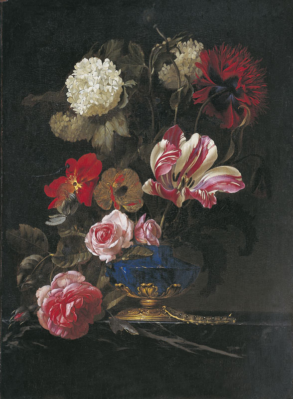
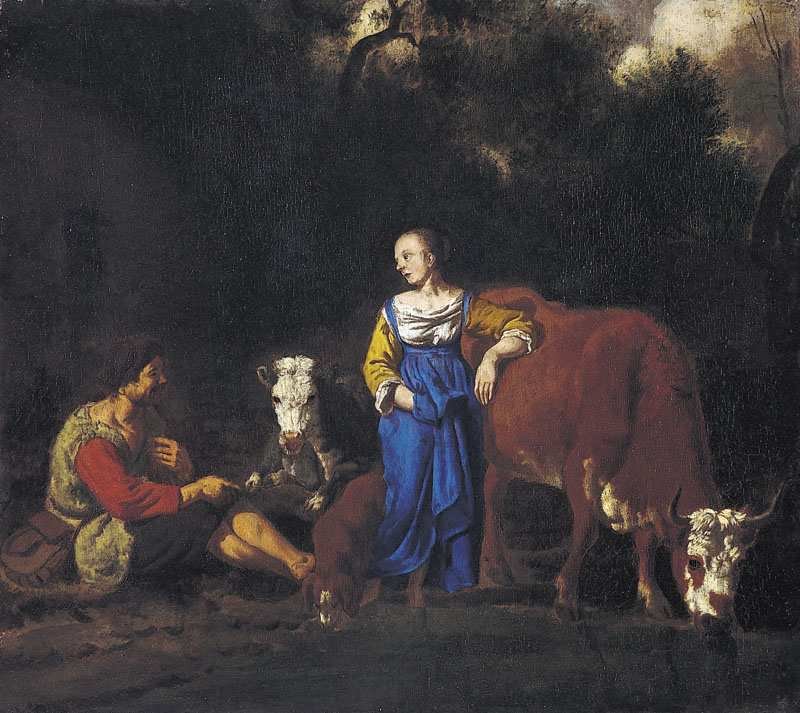
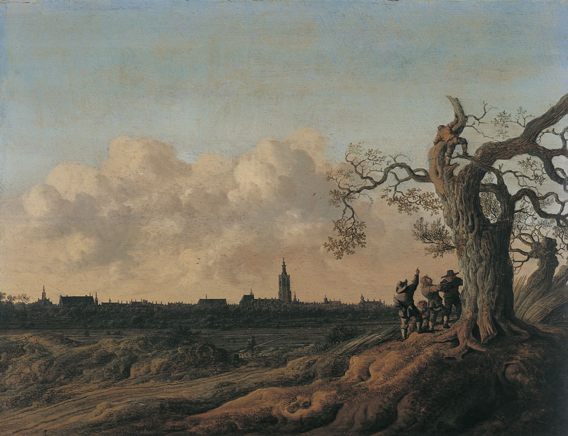
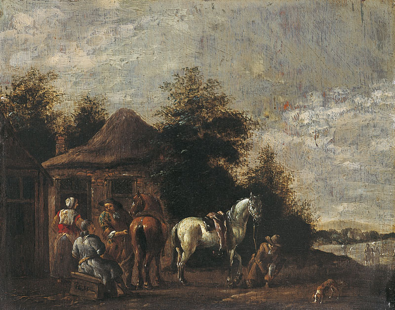

Acceuil
Les Oeuvres par l'Auteur
Site de la Musée
Bienvenue à l'inventaire du musée des augustins!
Cliquez sur une oeuvre pour plus d'informations.
Portrait d'homme
Tête de vieillard
Vase de fleurs

Nature morte de fruits
Berger et vachère

Cheval d'amazone sous un porche
Résurrection de Jésus
La Chaste suzanne
La Haye vue du Nord (Les Dénicheurs d'oiseaux)

Paysage avec figures
